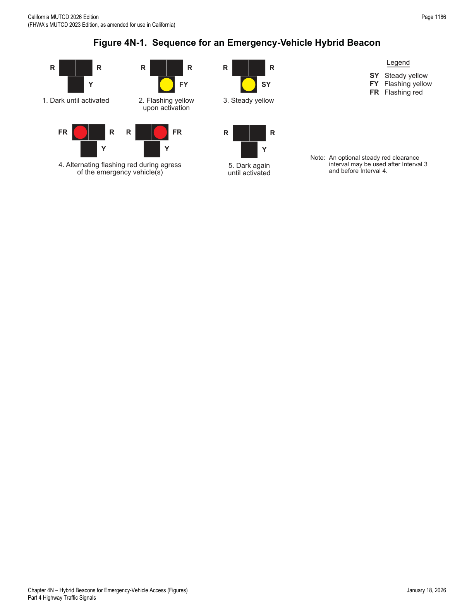

Part 4 · Highway Traffic Signals · Chapter 4N
Hybrid Beacons for Emergency-Vehicle Access
Application, design, and dark/flash/steady operating sequence for the hybrid-beacon alternative to a full emergency-vehicle traffic control signal at unsignalized locations.
4N.01Application of Emergency-Vehicle Hybrid Beacons
Standard — Mandatory Requirement
- 01Emergency-vehicle hybrid beacons shall be used only in conjunction with signs to warn and control traffic at an unsignalized location where emergency vehicles enter or cross a street or highway. Emergency-vehicle hybrid beacons shall be actuated only by authorized emergency or maintenance personnel.
Guidance — Recommended Practice
- 02Emergency-vehicle hybrid beacons should only be used when all of the following criteria are satisfied:
- A. The conditions justifying an emergency-vehicle traffic control signal (see Section 4M.01) are met;
- B. An engineering study, considering the road width, approach speeds, and other pertinent factors, determines that emergency-vehicle hybrid beacons can be designed and located in compliance with the requirements contained in this Chapter and in Section 4S.01, such that they effectively warn and control traffic at the location; and
- C. The location is not at or within 100 feet from an intersection or driveway where the side road or driveway is controlled by a STOP or YIELD sign.
4N.02Design of Emergency-Vehicle Hybrid Beacons
Standard — Mandatory Requirement
- 01Except as otherwise provided in this Section, an emergency-vehicle hybrid beacon shall meet the requirements of this Manual.
- 02An emergency-vehicle hybrid beacon face shall consist of three signal sections, with a CIRCULAR YELLOW signal indication centered below two horizontally aligned CIRCULAR RED signal indications (see Figure 4N-1).
- 03At least two emergency-vehicle hybrid beacon faces shall be installed for each approach of the major street.
Guidance — Recommended Practice
- 04On approaches having posted or statutory speed limits or 85th-percentile speeds in excess of 40 mph, and on approaches having traffic or operating conditions that would tend to obscure visibility of roadside beacon faces, both of the minimum of two emergency-vehicle hybrid beacon faces should be installed over the roadway.
- 05On multi-lane approaches having posted or statutory speed limits or 85th-percentile speeds of 40 mph or less, either an emergency-vehicle hybrid beacon face should be installed on each side of the approach (if a median of sufficient width exists) or at least one of the emergency-vehicle hybrid beacon faces should be installed over the roadway.
- 06An emergency-vehicle hybrid beacon should comply with the signal face location provisions described in Sections 4D.05 through 4D.10.
Standard — Mandatory Requirement
- 07Stop lines and EMERGENCY SIGNAL—STOP ON FLASHING RED (R10-14 or R10-14a) signs (see Section 2B.59) shall be used with emergency-vehicle hybrid beacons for each approach of the major street.
Option — Permissive
- 08If needed for extra emphasis, a STOP HERE ON FLASHING RED (R10-14b) sign (see Section 2B.59) may be installed with an emergency-vehicle hybrid beacon.
- 09Emergency-vehicle hybrid beacons may be equipped with a light or other display visible to the operator of the egressing emergency vehicle to provide confirmation that the beacons are operating.
- 10Emergency-vehicle hybrid beacons may be supplemented with an advance warning sign, which may also be supplemented with a Warning Beacon (see Section 4S.03).
Guidance — Recommended Practice
- 11If a Warning Beacon is used to supplement the advance warning sign, it should be programmed to flash only when the emergency-vehicle hybrid beacon is not in the dark mode.
4N.03Operation of Emergency-Vehicle Hybrid Beacons
Standard — Mandatory Requirement
- 01Emergency-vehicle hybrid beacons shall be placed in a dark mode (no indications displayed) during periods between actuations.
- 02Upon actuation by authorized emergency personnel, the emergency-vehicle hybrid beacon faces shall each display a flashing yellow signal indication, followed by a steady yellow change interval, prior to displaying two CIRCULAR RED signal indications in an alternating flashing array for a duration of time adequate for egress of the emergency vehicles (see Figure 4N-1). The alternating flashing red signal indications shall only be displayed when it is required that drivers on the major street stop and then proceed subject to the rules applicable after making a stop at a STOP sign. Upon termination of the flashing red signal indications, the emergency-vehicle hybrid beacons shall revert to a dark mode (no indications displayed) condition.
Guidance — Recommended Practice
- 03The duration of the flashing yellow interval should be determined by engineering judgment.
Standard — Mandatory Requirement
- 04The duration of the steady yellow change interval shall be determined using engineering practices in accordance with the provisions in Section 4F.17.
Guidance — Recommended Practice
- 05A yellow change interval should have a minimum duration of 3 seconds and a maximum duration of 6 seconds (see Section 4F.17). The longer intervals should be reserved for use on approaches with higher speeds.
Option — Permissive
- 06A steady red clearance interval may be used after the steady yellow change interval.
Guidance — Recommended Practice
- 07An emergency-vehicle hybrid beacon that is located 200 feet or less from an active grade crossing should be preempted in accordance with the applicable provisions in Sections 4F.19 and 8D.09.
Standard — Mandatory Requirement
- 08If an emergency-vehicle hybrid beacon is placed into a flashing mode by a conflict monitor (malfunction management unit) or by a manual switch, the emergency-vehicle hybrid beacon faces shall display flashing yellow signal indications to each approach of the major street.

In practice: this device is essentially the same hardware and sequence family as the pedestrian hybrid beacon (Chapter 4J) but without a steady-red "hold" interval — after the steady yellow change interval it goes straight to alternating flashing red for as long as needed for the emergency vehicle to egress, then reverts to dark. It cannot be actuated by the public; only authorized emergency or maintenance personnel may trigger it.
★ Key Takeaways — Chapter 4N
- An emergency-vehicle hybrid beacon is used only at unsignalized locations, actuated only by authorized emergency/maintenance personnel, and only where the location is not within 100 feet of a STOP/YIELD-controlled intersection or driveway.
- Beacon face: three sections, CIRCULAR YELLOW below two horizontally-aligned CIRCULAR RED indications; minimum two faces per major-street approach (both overhead if speeds exceed 40 mph or visibility is obscured).
- Required signing: stop lines plus EMERGENCY SIGNAL—STOP ON FLASHING RED (R10-14/R10-14a) for each major-street approach; an optional STOP HERE ON FLASHING RED (R10-14b) may add emphasis.
- Sequence: dark → flashing yellow → steady yellow change (3–6 seconds, per Section 4F.17) → alternating flashing red for the duration of emergency-vehicle egress → dark again.
- A beacon within 200 feet of an active grade crossing should be preempted per Sections 4F.19/8D.09; a conflict-monitor-triggered flash mode displays flashing yellow to all major-street approaches.